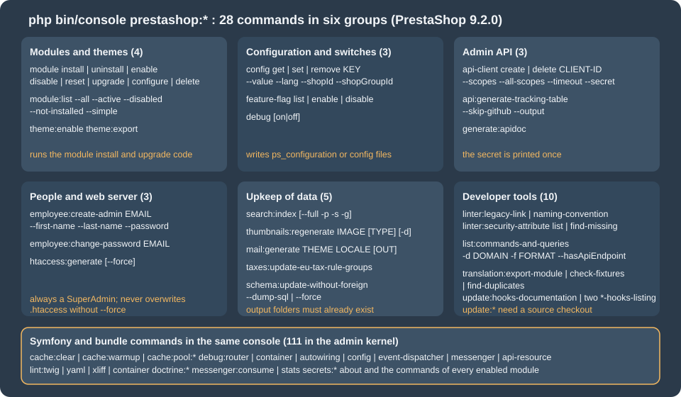

CLI Commands
|
This content was generated with the assistance of AI and should be verified against the official documentation before being relied on in production. |
This page was written against PrestaShop 9.2.0 (released 2026-09-30, Symfony 6.4.46, PHP 8.5.12 in the official Docker image,
MySQL 8.4) and checked on 2026-10-27. The console exists in every edition of the open-source, self-hosted PrestaShop; it is
the tool for everything that should not depend on a browser session: deployments, scheduled jobs, bulk operations,
scripted installations and diagnostics. PrestaShop 8.x has a smaller set of prestashop: commands; several commands
described here are new in 9.1 and 9.2 and the page says so where it matters.
The console is a Symfony Console application. PrestaShop adds a prestashop: namespace with 28 commands in 9.2.0 and keeps the
standard commands of Symfony and of its bundles (cache:*, debug:*, lint:*, doctrine:*, messenger:*, secrets:*,
about), which brings the total to 111 commands in the back-office kernel. A module can add its own. This page explains how
to run the console safely, documents every prestashop: command with the options that were observed, shows the
Symfony commands that matter to a shop developer, and builds a module with its own command. It follows the
Admin API page (whose clients can be created here) and precedes the
Performance and caching page (which uses cache:clear and the
configuration keys below). The module that brings its own command is pcfhcli.
The running example is Pocket Coffee. Its deployment script installs the modules, applies the shop settings that belong to
the coffee club (free shipping above 40 EUR), creates the API client of the ERP and rebuilds the search index; a nightly
job prints an order digest with a command of the module pcfhcli. What was run and what was not is listed in
What was run and what was not.
Running the console
The console is the file bin/console in the shop root, a PHP script. Run it from the shop root, with the PHP binary that
the web server uses, and as the user that owns the shop files (usually www-data):
cd /var/www/html
sudo -u www-data php bin/console --version
# PrestaShop 9.2.0 with Symfony 6.4.46
# in the official Docker image
docker exec -u www-data -w /var/www/html ec-prestashop php bin/console list prestashopRunning the console as root is the most common mistake: it writes cache files (var/cache/<env>/..., var/logs) owned by
root, after which the web server cannot write them and the shop fails with permission errors or silent cache misses.
If it happened, chown -R www-data: var repairs it. The CLI also uses a different php.ini than the web server:
opcache.enable_cli is Off in the Docker image, so every console invocation compiles PHP again (about a second of startup
for a command), and memory_limit and max_execution_time may differ; long jobs should set their own limits
(php -d memory_limit=1G bin/console ...).
Global options
Every command accepts the standard options plus three that PrestaShop defines:
| Option | Meaning |
|---|---|
|
The environment: |
|
Switches the Symfony debug mode off for this call. |
|
Selects the application kernel: |
|
Never ask a question. Required in scripts: |
|
Quiet and verbosity levels. |
|
Enables the Symfony profiler for the command (needs debug mode). |
The Docker image prints PHP Warning: Constant _PS_MODE_DEV_ already defined at the start of every command when PS_DEV_MODE=1
(its defines_custom.inc.php defines the constant and so does the bootstrap). The warning goes to the error stream, it is
harmless, and scripts that capture the output should read only standard output (2>/dev/null).
Exit codes
A command returns 0 on success and a non-zero code on failure, which is what CI and cron need, with one exception that
was observed: prestashop:module <action> printed an error message for an invalid module (Cannot install module
nonexistentmod. The module nonexistentmod is invalid and cannot be loaded.) and still exited with 0, so a deployment
script should check the module state afterwards (prestashop:module:list), not only the exit code. A command that throws, such as
a weak password for employee:create-admin, ends with Symfony’s error status. Codes seen in the runs: 1 for a failure reported by
the command (unknown feature flag, a failing linter, translation:check-fixtures), 2 for an invalid input option of a custom command
(Command::INVALID), 4 for an uncaught exception.
The command map

The complete list printed by bin/console list prestashop:
| Command | Purpose |
|---|---|
|
Create or delete an Admin API client. |
|
Generate a Markdown table of the Admin API endpoint coverage (alias |
|
Get, set or remove a configuration value. |
|
Show or set the debug mode. |
|
Change an employee’s password, or create a SuperAdmin employee. |
|
List, enable or disable feature flags. |
|
Generate the API documentation of the legacy web service (needs a source checkout). |
|
Generate the |
|
Check back-office routes and controllers. |
|
List the CQRS commands and queries and their API routes. |
|
Generate the mail templates of a theme for a locale. |
|
Install, uninstall, enable, disable, reset, upgrade, configure or delete a module. |
|
List the modules and their versions. |
|
Compare the Doctrine schema with the database and optionally apply it, without foreign keys. |
|
Index products for the search. |
|
Update the EU tax rule groups. |
|
Enable a theme, or package a theme with its dependencies. |
|
Regenerate image thumbnails. |
|
Translation tooling. |
|
Tools of the core maintainers that keep the list of hooks in sync. |
The documentation of each command marks the release that introduced it where that is recent. The pages for about,
prestashop:feature-flag, prestashop:generate:apidoc, prestashop:search:index, prestashop:thumbnails:regenerate,
prestashop:translation:export-module and prestashop:update:hooks-documentation are marked 9.1, and those for
prestashop:employee:create-admin, prestashop:employee:change-password, prestashop:htaccess:generate and
prestashop:module:list are marked 9.2. Commands without a mark are older or were documented without a version; on
PrestaShop 8.x only a subset exists, so check bin/console list prestashop on the version you run. The documentation of the
console component also lists prestashop:licenses:update, a tool for the core repository that is not present in a release install.
Two Symfony commands deserve to be listed with them because the documentation of the platform relies on them:
about shows the version, environment, cache size, log size, OPcache and APCu state, and the PrestaShop section (version, debug
mode, Smarty cache); and bin/console debug:* explains what the container, router and event dispatcher contain.
bin/console about | tail -8
# -------------- -------
# PrestaShop
# -------------- -------
# Version 9.2.0
# Debug mode false
# Smarty Cache true
# -------------- -------Source: PrestaShop devdocs: about
In that run about printed Debug mode false while the kernel above it was Environment dev, Debug true: the PrestaShop
section reads the _PS_MODE_DEV_ define from the files, not the environment variable that the Docker image uses, see
Debug mode.
Modules
prestashop:module <action> <module name> [<file path>] runs the same code as the Module Manager of the back office, so the
module’s install(), upgrade scripts and hooks execute.
| Action | Effect |
|---|---|
|
Installs the module: copies its overrides, runs |
|
Runs |
|
Marks the module active or inactive without uninstalling it. A disabled module’s hooks do not run and its Admin API
resources are not loaded; its console command, however, stayed listed and runnable after |
|
Uninstalls and installs again, which runs |
|
Runs the upgrade scripts |
|
Applies the declarative file |
|
Removes the module folder from |
The option --skip-overrides installs or uninstalls the module without touching the files under override/, which is the
way to install a module on a shop whose override of the same class is managed by hand.
bin/console prestashop:module install pcfhcli
# Install action on module pcfhcli succeeded.
bin/console prestashop:module:list --simple | grep pcfh
bin/console prestashop:module disable pcfhcli
bin/console prestashop:module enable pcfhcli
bin/console prestashop:module upgrade pcfhcli
# Update action on module pcfhcli succeeded.
bin/console prestashop:module reset pcfhcli
# Reset action on module pcfhcli succeeded.
bin/console prestashop:module install nonexistentmod
# Cannot install module nonexistentmod. The module nonexistentmod is invalid and cannot be loaded. (exit status 0)The modules of the install were listed with prestashop:module:list (9.2). Its flags are --active (installed and enabled),
--disabled (installed but disabled), --not-installed (present on disk or registered by a hook but not installed), --all
(also the uninstalled) and --simple (technical names only, one per line, for scripts):
bin/console prestashop:module:list --disabled
# +-----------------+---------+----------+
# | Name | Version | Status |
# +-----------------+---------+----------+
# | blockwishlist | 4.0.0 | Disabled |
# | ps_brandlist | 1.0.5 | Disabled |
# | ps_supplierlist | 1.0.7 | Disabled |
# +-----------------+---------+----------+
bin/console prestashop:module:list --all --simple | wc -l # 91 modules on the test shopDeclarative configuration with self_config.yml
prestashop:module configure <name> reads self_config.yml from the module folder (the first file of that name found
under it), or the YAML file given as last argument, and applies up to four steps in this order: configuration, files,
sql and php. It is meant for turning a freshly installed module into a configured one in a script, with no back-office
visit. The Pocket Coffee module pcfhcli ships this file:
configuration:
update:
PCFHCLI_DIGEST_FORMAT: json
PCFHCLI_FREE_SHIPPING_FROM:
value: 40
delete:
- PCFHCLI_OLD_KEY| Step | Content |
|---|---|
|
|
|
A list of |
|
A list of SQL files (or |
|
A list of PHP files; each must define a class named like the file with a |
bin/console prestashop:module configure pcfhcli
# Configuration successfully applied.
bin/console prestashop:config get PCFHCLI_DIGEST_FORMAT
# [OK] PCFHCLI_DIGEST_FORMAT=json
bin/console prestashop:module configure pcfhapi
# Validation of configuration details failed:
# - No config file to apply
bin/console prestashop:module configure pcfhcli /nonexistent.yml
# - Specified config file is not foundConfiguration values
prestashop:config <get|set|remove> <KEY> reads and writes the table ps_configuration, the same values that
Configuration::get() and Configuration::updateValue() use in PHP. Options: --value (alias -val) for set, --lang (a
language ID or an ISO code) for translatable values, and --shopId (-s) and --shopGroupId (-g) for the multistore scope.
Without a shop option the value applies to every shop.
bin/console prestashop:config get PS_SHIPPING_FREE_PRICE
# [OK] PS_SHIPPING_FREE_PRICE=0
bin/console prestashop:config set PS_SHIPPING_FREE_PRICE --value=40 # free shipping above 40 EUR for Pocket Coffee
# [OK] PS_SHIPPING_FREE_PRICE=40
bin/console prestashop:config set PCFHCLI_NOTE --value=hola --lang=es # a value in one language only
bin/console prestashop:config get PCFHCLI_NOTE --lang=es
# [OK] PCFHCLI_NOTE=hola
bin/console prestashop:config remove PCFHCLI_NOTE
# [OK] PCFHCLI_NOTE removed
bin/console prestashop:config get PS_SHOP_NAME -s 99
# [ERROR] Shop group was not found for the shop with id 99.Notes from the runs:
-
getof a key that does not exist is not an error: it printsKEY=with an empty value and exits with 0, so a typo in a key name is silent. Check the value you just wrote with aget, as above. -
A global value is stored with
id_shopandid_shop_groupset toNULL:select name, value, id_shop, id_shop_group from ps_configuration where name = 'PS_SHIPPING_FREE_PRICE'returned one row with both columnsNULL. -
The
setoutput echoes the value that is stored after the call; for a translatable key written with--lang=es, the echo showed the value without language, so verify withget --lang=es. -
The command changes the database. The web process loads the configuration on each request, so a changed value is seen by the next request with no cache clearing, unless the SQL cache of the performance page is enabled with APCu or Memcached; the APCu cache of the web server is not shared with the command line, so a
setfrom the console is then not visible until the cached query expires or the web cache is flushed (see the performance page). Values compiled into the container (services, routes) are different: they needcache:clear. -
Configuration keys that matter to the performance page (
PS_SMARTY_CACHE,PS_SMARTY_FORCE_COMPILE,PS_CSS_THEME_CACHE,PS_JS_THEME_CACHE,PS_HTACCESS_CACHE_CONTROL) and to the Admin API (PS_ENABLE_ADMIN_API,PS_ADMIN_API_FORCE_DEBUG_SECURED) can be read and set with it.
Feature flags
A feature flag turns an in-progress area of the core on or off. The back office lists them in Advanced Parameters > New &
Experimental Features; prestashop:feature-flag list|enable|disable [<flag>] does the same from the console (9.1 and later).
bin/console prestashop:feature-flag list
# +----------------------------------+-----------------------+----------+
# | Feature flag | Type | State |
# +----------------------------------+-----------------------+----------+
# | admin_api_multistore | env,dotenv,[db] | Disabled |
# | admin_api_experimental_endpoints | env,dotenv,[db] | Disabled |
# | catalog_price_rule | env,dotenv,[db] | Disabled |
# | country | env,dotenv,[db] | Enabled |
# | ... | | |
# | front_container_v2 | env,[dotenv],db | Disabled |
# | new_pricing | env,query,dotenv,[db] | Disabled |
# +----------------------------------+-----------------------+----------+
bin/console prestashop:feature-flag enable catalog_price_rule
# Feature flag catalog_price_rule was enabled
bin/console prestashop:feature-flag disable catalog_price_rule
# Feature flag catalog_price_rule was disabled
bin/console prestashop:feature-flag enable nope
# Feature flag nope does not exist (exit status 1)The Type column lists the sources that can define the flag, in priority order, and the source currently in force is
in brackets: env (an environment variable PS_FF_<FLAG> such as PS_FF_FRONT_CONTAINER_V2=true), query (a URL
parameter, only for new_pricing, to try it in the browser), dotenv (the .env file of the shop, where the flags
front_container_v2 is defined) and db (the ps_feature_flag table, which enable and disable write). The
documentation says that enable and disable modify the appropriate source for the flag. Changing a flag whose bracket shows
env or dotenv was not tested; look at the bracket first, because the source in force decides what the shop does.
The flags of 9.2.0, from the ps_feature_flag table (the stability column is what the back-office page shows; the
description is the label of the table):
| Flag | State | Stability | Description in the shop |
|---|---|---|---|
|
off |
beta |
Enable or disable the Admin API when multistore is enabled. |
|
off |
beta |
Experimental API endpoints are disabled by default in the prod environment; this allows to force them on. |
|
off |
beta |
The migrated catalogue price rules, permissions, customer threads, customer group and store pages. |
|
off |
beta |
The new discount system, the new pricing engine, the improved B2B mode (which also needs the B2B mode in the general settings) and the improved shipment system. |
|
off |
beta |
The new front container. |
|
on |
stable |
The migrated countries, carriers, tax rule groups, merchandise return, tag, quick access, email body translation and "Hook a module" pages. |
Two behaviours were verified. First, the state changed immediately and the CLI printed the new state; a flag that gates the
Admin API surface needs the cache of the API kernel cleared before the routes change (cache:clear --app-id=admin-api).
Second, flags that were switched on to test and left on stay on in the database: scripts should restore the state they found,
as the example above does. Do not switch beta flags on in production without testing the modules the shop uses, because
modules written for the legacy page can stop working when its page is migrated.
Admin API clients and reports
prestashop:api-client create|delete <client-id> is documented on the Admin API
page, with its options (--name, --description, --scopes, --all-scopes, --timeout, --secret, --secret-only). In a
script, capture the secret once and store it in the secret manager of the integration:
PS_ERP_SECRET=$(bin/console prestashop:api-client create pocket-coffee-erp \
--name="Pocket Coffee ERP" --scopes=product_read,customer_group_read,customer_group_write \
--timeout=900 --secret-only 2>/dev/null | tr -d ' \n')
# store ${PS_ERP_SECRET} in the secret manager now; the shop keeps only a bcrypt hash
bin/console prestashop:api-client delete pocket-coffee-erp
# [OK] Successfully removed API Client pocket-coffee-erp
bin/console prestashop:api-client create x --scopes=bogus_scope
# The scopes bogus_scope are not associated to any installed API.prestashop:api:generate-tracking-table [-o FILE] [--skip-github] [--include-excluded] writes a Markdown report of the CQRS
commands and queries that have an Admin API endpoint, with a percentage; --skip-github avoids the calls to the GitHub API
that would look for open pull requests (and needs no token). On the test shop it reported 501 endpoints, 190 implemented (37.9%).
prestashop:generate:apidoc belongs to the legacy web service documentation generator and needs the source checkout.
People and web server
prestashop:employee:create-admin [<email>] [--first-name] [--last-name] [--password] (9.2) creates a back-office SuperAdmin
from the shell: active, in the default language, associated with every shop, no avatar. It is meant for first-access
recovery and scripted installations. A password is asked twice and hidden when it is not passed with --password;
passing it on the command line leaves it in the shell history and in the process list, so prefer the interactive prompt or read
it from a file descriptor in a script.
bin/console prestashop:employee:create-admin pcfh-ops@example.test --first-name=Ada --last-name=Lovelace \
--password="${PS_NEW_ADMIN_PASSWORD}" -n
# [OK] SuperAdmin employee #3 (pcfh-ops@example.test) created with full back-office access.
# [WARNING] This account has SuperAdmin privileges. Share the credentials carefully.
bin/console prestashop:employee:create-admin pcfh-ops@example.test ... -n
# [ERROR] Failed to create employee: An account already exists for this email address. (exit status 1)
bin/console prestashop:employee:create-admin not-an-email ... -n
# [ERROR] Failed to create employee: Email address is invalid.
bin/console prestashop:employee:create-admin x@example.test --password=abc ... -n
# Employee password length must be between 8 and 72 (exit status 4)There is no command to delete an employee (the back-office Team page does that); the test employee was removed with SQL
(delete from ps_employee_shop ...; delete from ps_employee ...) after the run. prestashop:employee:change-password
<email> [--password] sets a new password and sends the standard "Your new password" e-mail to the employee, which means it
needs working mail settings; it was not run on the test shop for that reason.
prestashop:htaccess:generate [--force] (9.2) regenerates the .htaccess file of the shop from the current configuration
(URL rewriting, the Apache optimisation block when PS_HTACCESS_CACHE_CONTROL is on). Without --force it refuses to overwrite:
bin/console prestashop:htaccess:generate
# .htaccess already exists. Use --force to overwrite.The checksum of the file was the same before and after that call. Use --force only after a backup of the file, because
manual additions outside the markers that the generator preserves are lost.
Upkeep of catalogue data
prestashop:search:index (9.1) builds the product search index that the shop’s search uses. --full rebuilds the whole
index, --shop-id (-s) and --shop-group-id (-g) limit it to a shop or a group, and --product-id (-p) re-indexes one
product, which is the call to make after an import that bypassed the back office. Without options it indexes the products that
are missing from the index.
bin/console prestashop:search:index -p 1
# [OK] Search indexation complete.
bin/console prestashop:search:index --full
# [OK] Search indexation complete.prestashop:thumbnails:regenerate <image> [<image-type>] [--delete] (9.1) regenerates the derived images. image is one of
all, categories, manufacturers, suppliers, products, stores; image-type is the ID of an image type
(Design > Image Settings), 0 meaning all; --delete (-d) erases the previous files first. Run it after changing the
image sizes of the theme or after adding a format. For a large catalogue it takes minutes and, as a CPU-heavy job, belongs to a
maintenance window or a nightly cron:
bin/console prestashop:thumbnails:regenerate stores
# [INFO] The thumbnails were successfully regenerated.
0 2 * * * cd /var/www/html && php bin/console prestashop:thumbnails:regenerate products --env=prodprestashop:mail:generate <theme> <locale> [<coreOutputFolder> [<modulesOutputFolder>]] [--overwrite] renders the mail
templates (HTML and text) of a theme for a locale into folders. Both folders must already exist: with a missing folder the
command stops with Invalid core output folder. For the Classic theme and en-US it wrote 86 files (the core mails plus those of the
modules, in a folder per module). prestashop:taxes:update-eu-tax-rule-groups refreshes the European VAT rule groups when
the rates change (it modifies the database and was not run). prestashop:schema:update-without-foreign compares the Doctrine
entities with the database:
bin/console prestashop:schema:update-without-foreign --dump-sql | head -4
# Updating database schema...
# Database schema not updated because force option is not set
# Showing required queries for update
# ALTER TABLE ps_image_type CHANGE image_fitment image_fitment VARCHAR(16) DEFAULT 'fit'Without --force the command only prints the SQL. The fresh 9.2.0 install already showed a number of differences (column
types, index names), so the output is a list to read, not a to-do list; applying it with --force on a production database is a
decision for a backup and a maintenance window.
Themes and translations
prestashop:theme:enable <theme> activates an installed theme (the same as choosing it in Design > Theme and Logo) and
prestashop:theme:export <theme> packages a theme with its dependencies as themes/<theme>.zip:
bin/console prestashop:theme:enable hummingbird
bin/console prestashop:theme:export classic
# Your theme has been correctly exported: /var/www/html/themes/classic.zip (1.9 MB)The export copies the theme into a temporary folder under var/cache/prod first. On the first try it failed with Failed to copy ... to var/cache/prod/export-classic-..., with a different file each time, because another process was clearing
var/cache at the same moment; the second try succeeded. Do not run a theme export in parallel with a cache:clear.
prestashop:translation:export-module <module> [<locale>] writes the XLF files of a module for one locale or all locales
(the 9.1 changelog calls it prestashop:module:export-translations; the name in 9.2.0 is the first). The other two
translation commands are checks for the core and for module developers: translation:check-fixtures (exit status 1 with findings on
the test shop) and translation:find-duplicates. They are discussed with the
module translations page.
Debug mode
prestashop:debug [on|off|1|0|true|false] shows the debug mode (_PS_MODE_DEV_) or switches it by rewriting the define in
config/defines_custom.inc.php (or config/defines.inc.php). It is a convenience for classic hosts and it has a trap with the
Docker image: there the custom file does not contain a literal true or false, it contains
if ((bool) getenv('PS_DEV_MODE')) { define('_PS_MODE_DEV_', (bool) getenv('PS_DEV_MODE')); }. The command reads the value with a
regular expression, so it reports Debug mode is: ON for a container started with PS_DEV_MODE=0, and prestashop:debug off
replaces the environment-driven line with a fixed define('_PS_MODE_DEV_', false);, after which the environment variable no
longer has any effect. On a Docker deployment, change the variable of the container instead, and use the command only for a
classic installation. PS_DEV_MODE=false (a non-empty string) counts as true; use 0 or leave the variable unset.
bin/console prestashop:debug
# [OK] Debug mode is: ON (container with PS_DEV_MODE=1, correct)
bin/console prestashop:debug # inside a container started with PS_DEV_MODE=0
# [OK] Debug mode is: ON (wrong: the regular expression matched the getenv() expression)Linters and inspection
bin/console prestashop:linter:legacy-link
# There is no routes without _legacy_link settings
bin/console prestashop:linter:security-attribute find-missing
# [WARNING] 3 routes are not configured with #[AdminSecurity] attribute:
# * admin_mbo_module_cdc_error
# * admin_mbo_recommended_modules
# * admin_mbo_addons_module_upgrade
bin/console prestashop:linter:naming-convention
# prints the back-office routes whose names deviate from the convention (no path argument)The three linters check back-office routes: that every route defines _legacy_link (needed for the old URLs and the
menu), that route and controller names follow the convention, and that every controller route carries an #[AdminSecurity]
attribute (list shows the configured ones, find-missing the others). They exit with status 1 when they find a problem, so they fit
a CI job. They check the routes of the whole container, core and modules, so a failure can come from a module that is not yours; on the
test shop legacy-link failed once because of a route of another module under test. The Symfony linters lint:twig <path>,
lint:yaml <path> and lint:xliff <path> check a module’s templates, configuration and translations; lint:container failed
on the test shop in dev mode with a logger configuration error (RotatingFileHandler ... $maxFiles ... string given) that is not a
module problem.
prestashop:list:commands-and-queries [-d DOMAIN] [-f simple|regular] [--hasApiEndpoint=0|1] lists the CQRS classes registered
on the command and query buses, which is the inventory a developer needs before writing a module that wraps core
behaviour. The simple format prints class OK or class NOT OK (has an Admin API route or not); the regular format adds the type,
the HTTP route and the description:
bin/console prestashop:list:commands-and-queries -d Customer --hasApiEndpoint=1 | head -5
# 177.
# Class: PrestaShop\PrestaShop\Core\Domain\Customer\Query\GetCustomerForViewing
# Type: Query
# API: GET /customers/{customerId}/details
# Gets detailed customer information for viewing in Back Office.The prestashop:update:* commands and prestashop:generate:apidoc are maintenance tools for the core repository. On a release
install, prestashop:update:hooks-documentation <dir> failed with File .../install-dev/data/xml/hook.xml has not been found
because that file exists only in a source checkout.
Symfony commands that a shop developer uses
| Command | What it is for |
|---|---|
|
Deletes the compiled containers, routes, translations and Twig templates of an environment and application, and warms
the back-office and API caches. It took 7 to 9 seconds on the test shop. Run it after changing |
|
Warms an empty cache, to avoid a slow first request after a deployment. |
|
Lists and clears the Symfony cache pools ( |
|
Lists routes. Pipe it to |
|
Describes a service: class, tags, autowiring, usages. For one handler of the Pocket Coffee module it showed the tag
|
|
Lists the messages that the bus can dispatch and the handlers of each, that is, every CQRS command and query of core and modules. |
|
Inspect what the container knows. |
|
Lists the operations of an API Platform resource (interactive). |
|
Run and observe asynchronous Messenger consumers, where a module defines a transport. |
|
Syntax and wiring checks. |
|
Doctrine and secrets tooling; |
Source: Symfony: Console commands
A module command
A module adds a command by shipping a class that extends Symfony\Component\Console\Command\Command, with the attribute
#[AsCommand], and registering it as a service tagged console.command in config/services.yml. The Pocket Coffee module
pcfhcli provides pcfhcli:order-digest, which prints how many orders were placed since a date and their total, as a table
or as JSON for another program:
<?php
declare(strict_types=1);
namespace PrestaShop\Module\Pcfhcli\Command;
use DateTimeImmutable;
use Doctrine\DBAL\Connection;
use Symfony\Component\Console\Attribute\AsCommand;
use Symfony\Component\Console\Command\Command;
use Symfony\Component\Console\Input\InputInterface;
use Symfony\Component\Console\Input\InputOption;
use Symfony\Component\Console\Output\OutputInterface;
use Symfony\Component\Console\Style\SymfonyStyle;
#[AsCommand(
name: 'pcfhcli:order-digest',
description: 'Prints how many orders were placed since a date and their total.'
)]
final class OrderDigestCommand extends Command
{
public function __construct(private readonly Connection $connection, private readonly string $dbPrefix)
{
parent::__construct();
}
protected function configure(): void
{
$this
->addOption('since', 's', InputOption::VALUE_REQUIRED, 'First day to include (Y-m-d)', '1970-01-01')
->addOption('format', 'f', InputOption::VALUE_REQUIRED, 'table or json', 'table');
}
protected function execute(InputInterface $input, OutputInterface $output): int
{
$io = new SymfonyStyle($input, $output);
$since = (string) $input->getOption('since');
$date = DateTimeImmutable::createFromFormat('!Y-m-d', $since);
if (false === $date || $date->format('Y-m-d') !== $since) {
$io->error(sprintf('"%s" is not a valid Y-m-d date.', $since));
return Command::INVALID;
}
$row = $this->connection->fetchAssociative(
'SELECT COUNT(*) AS orders, COALESCE(SUM(total_paid_tax_incl), 0) AS total FROM ' . $this->dbPrefix . 'orders WHERE date_add >= :since',
['since' => $date->format('Y-m-d 00:00:00')]
);
if ('json' === $input->getOption('format')) {
$output->writeln((string) json_encode(['since' => $since, 'orders' => (int) $row['orders'], 'total' => (float) $row['total']]));
return Command::SUCCESS;
}
$io->table(['Since', 'Orders', 'Total (tax incl.)'], [[$since, $row['orders'], number_format((float) $row['total'], 2, '.', '')]]);
return Command::SUCCESS;
}
}Source: Symfony: Console commands
The service definition gives the command its two constructor arguments (the Doctrine connection by autowiring and the table prefix by binding) and tags it:
services:
_defaults:
autowire: true
autoconfigure: true
public: false
bind:
string $dbPrefix: '%database_prefix%'
PrestaShop\Module\Pcfhcli\Command\OrderDigestCommand:
tags:
- { name: console.command }Source: Symfony: Registering the command
The main class (pcfhcli.php) is the usual minimal module with isUsingNewTranslationSystem(); the module has no hooks and
no install code. Install it, rebuild the cache and run the command:
bin/console prestashop:module install pcfhcli
bin/console list pcfhcli # nothing yet: the container was built before the module existed
bin/console cache:clear
bin/console list pcfhcli
# Available commands for the "pcfhcli" namespace:
# pcfhcli:order-digest Prints how many orders were placed since a date and their total.
bin/console pcfhcli:order-digest
# ------------ -------- -------------------
# Since Orders Total (tax incl.)
# ------------ -------- -------------------
# 1970-01-01 5 308.00
# ------------ -------- -------------------
bin/console pcfhcli:order-digest --since=2026-01-01 -f json
# {"since":"2026-01-01","orders":5,"total":308}
bin/console pcfhcli:order-digest --since=26-01-01 ; echo "exit=$?"
# [ERROR] "26-01-01" is not a valid Y-m-d date.
# exit=2
bin/console pcfhcli:order-digest --env=prod -f json # the same result from the production containerSource: Symfony: Registering the command
Things to know:
-
The console only sees the command after the container was rebuilt, so
cache:clearafterinstallis part of every deployment of a module that adds a command. A disabled module’s commands disappear fromlistafter the next rebuild. -
The command class is autoloaded through the module’s Composer autoloader. The module’s
vendor/autoload.phpmust exist (composer dump-autoload -obefore packaging). -
Keep the command small and push the logic into a service that a controller and a command can both call; this is the same design as the CQRS handlers of the Admin API module.
-
A command that uses legacy classes (
Configuration,Context,Product) in the CLI needs the legacy context initialised; the serviceprestashop.adapter.legacy_context_loaderprovidesloadGenericContext(), which creates a fake employee and controller where the legacy code expects them. -
The shop’s mail, logging and cache directories must be writable by the user that runs the command.
Scheduling a command
# /etc/cron.d/pocket-coffee (user www-data)
*/15 * * * * www-data cd /var/www/html && php bin/console pcfhcli:order-digest --env=prod -f json >> var/logs/digest.jsonl 2>&1
0 3 * * * www-data cd /var/www/html && php bin/console prestashop:search:index --env=prodAlways cd to the shop root, name the user, use --env=prod and redirect the output; add a lock (flock -n) for jobs that may
overlap, such as the thumbnail regeneration.
A deployment script for Pocket Coffee
A script that makes a deployment repeatable. It uses only commands documented above; each of them was run on the test shop (the script as a whole was not).
#!/bin/sh
set -eu
cd /var/www/html
CONSOLE="php bin/console --env=prod"
# 1. code is already in place (git pull, composer install --no-dev -o); install or upgrade the modules
for m in pcfhapi pcfhcli; do
$CONSOLE prestashop:module install "$m" || true # exit status is 0 even on failure: check below
$CONSOLE prestashop:module upgrade "$m"
done
$CONSOLE prestashop:module:list --active --simple | grep -qx pcfhapi
$CONSOLE prestashop:module:list --active --simple | grep -qx pcfhcli
# 2. declarative module settings and shop settings
$CONSOLE prestashop:module configure pcfhcli
$CONSOLE prestashop:config set PS_SHIPPING_FREE_PRICE --value=40
# 3. the container and the API container know the new classes
$CONSOLE cache:clear
$CONSOLE cache:clear --app-id=admin-api
# 4. the ERP client, created once
$CONSOLE prestashop:api-client create pocket-coffee-erp --scopes=product_read,customer_group_read,customer_group_write \
--timeout=900 --secret-only >"${HOME}/.erp-secret" || echo "client exists"
# 5. search index
$CONSOLE prestashop:search:indexA secret written to a file such as ~/.erp-secret must be moved to the secret store and deleted at once; the script shows
the mechanism, not a place to keep a secret.
Common problems
| Symptom | Cause and fix |
|---|---|
Permission errors on the web site after running a command |
The command ran as |
A command prints nothing, with exit status 0, for every command, or |
A PHP file ending with |
A new command or service is not found |
The container was compiled before the module was installed. Run |
|
Another process cleared the cache during |
|
The output folder of |
|
A harmless warning of the Docker image with |
|
|
A command fails in |
An environment problem of the dev mode in 9.2.0 on the test shop; it is not caused by the module being linted. |
A feature flag does not seem to switch |
Look at the bracket in the |
What was run and what was not
On a local PrestaShop 9.2.0 shop (official Docker image, MySQL 8.4, PHP 8.5.12, Apache 2.4.68) every command shown with output
in this page was run, as the www-data user: the whole list and the --help of the 28 commands; the module actions with
pcfhapi and pcfhcli including configure and the error cases; module:list with every flag; config with and without --lang and
--shopId; feature-flag list, enable, disable and the unknown flag (the flag was restored); api-client create and delete with
--secret-only and an invalid scope, api:generate-tracking-table; employee:create-admin with its error cases (the employee was
removed afterwards); htaccess:generate without --force; search:index for one product and --full; thumbnails:regenerate stores;
mail:generate; schema:update-without-foreign --dump-sql; theme:export; the three linters, list:commands-and-queries, about,
debug:container, debug:messenger and cache:clear (with and without --app-id); the pcfhcli:order-digest command in dev and
prod, and prestashop:debug in a throw-away copy of the shop. php -l was run on the module files.
Not run: employee:change-password (it sends mail), htaccess:generate --force, schema:update-without-foreign --force,
taxes:update-eu-tax-rule-groups, translation:export-module for a module with translations on this page, prestashop:update:* and
generate:apidoc (they need a source checkout), messenger:consume, prestashop:thumbnails:regenerate products for the full
catalogue, and every command on PrestaShop 8.2. The scheduling and deployment examples were checked for syntax, not scheduled or executed as a unit.